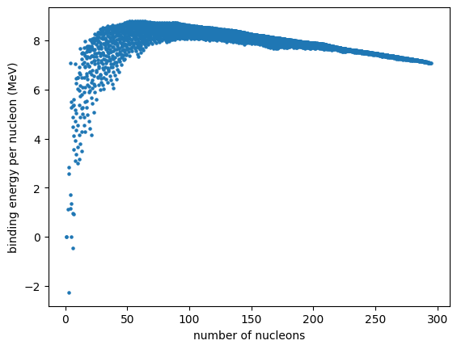
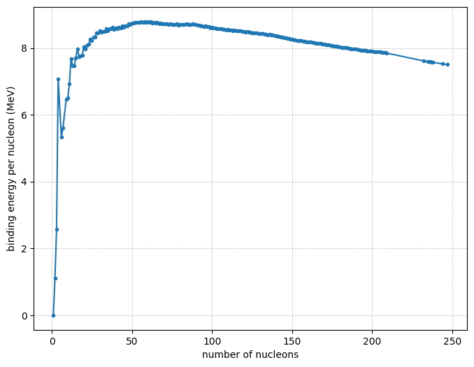

Binding Energy per Nucleon#
We can explore and plot the binding energy per nucleon to understand when fusion and fission operate.
import pynucastro as pyna
First we’ll get all nuclei with known masses and look at the binding energy
nuclei = pyna.get_all_nuclei()
len(nuclei)
3558
We see there are > 3500 nuclei with measured masses
Most tightly bound nucleus#
We can easily find the nucleus that is most tightly bound
nuc_bound = max(nuclei, key=lambda n : n.nucbind)
nuc_bound
Ni62
Binding energy plot#
Now we can make a plot of binding energy per nucleon for all nuclei
As = [n.A for n in nuclei]
BEs = [n.nucbind for n in nuclei]
import matplotlib.pyplot as plt
fig, ax = plt.subplots()
ax.scatter(As, BEs, s=5)
ax.set_xlabel("number of nucleons")
ax.set_ylabel("binding energy per nucleon (MeV)")
Text(0, 0.5, 'binding energy per nucleon (MeV)')

We see that there is quite a spread in binding energy for each nucleon count.
Cleaner plot#
We can instead consider only the most tightly bound nucleus at each mass number. We will also only consider those that are stable (or have half lives > 1 million years)
nuc = []
1 million years in seconds
million_years = 1.e6 * 365.25 * 24 * 3600
for A in range(1, max(As)+1):
# for mass number A, find the nucleus with the maximum binding energy
try:
_new = max((n for n in nuclei
if n.A == A and (n.tau == "stable" or
(n.tau is not None and n.tau > million_years))),
key=lambda q: q.nucbind)
except ValueError:
# no stable nucleus of this mass
continue
nuc.append(_new)
We now plot just these most tightly bound nuclei
As = [n.A for n in nuc]
BEs = [n.nucbind for n in nuc]
fig, ax = plt.subplots()
ax.plot(As, BEs, marker="o", markersize="3")
ax.set_xlabel("number of nucleons")
ax.set_ylabel("binding energy per nucleon (MeV)")
ax.grid(ls=":")
fig.set_size_inches((8, 6))
